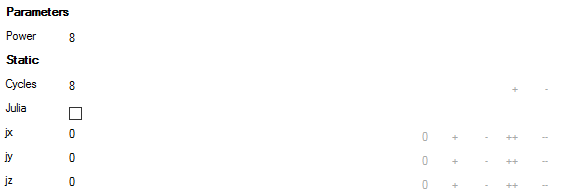

The Formula Parameters tab defined the parameters of the "gestalt".

The entries under Parameters are formula specific. Static entries contains some parameters which are common for mostly all fractal formula, like number of iterations or julia seed values.